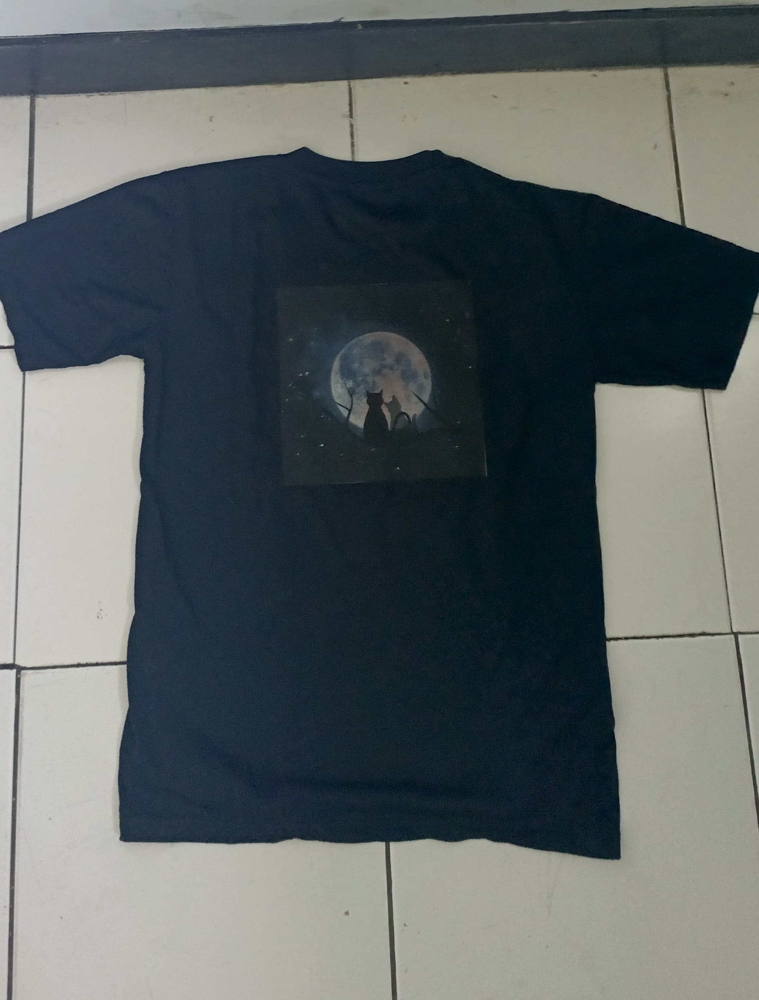
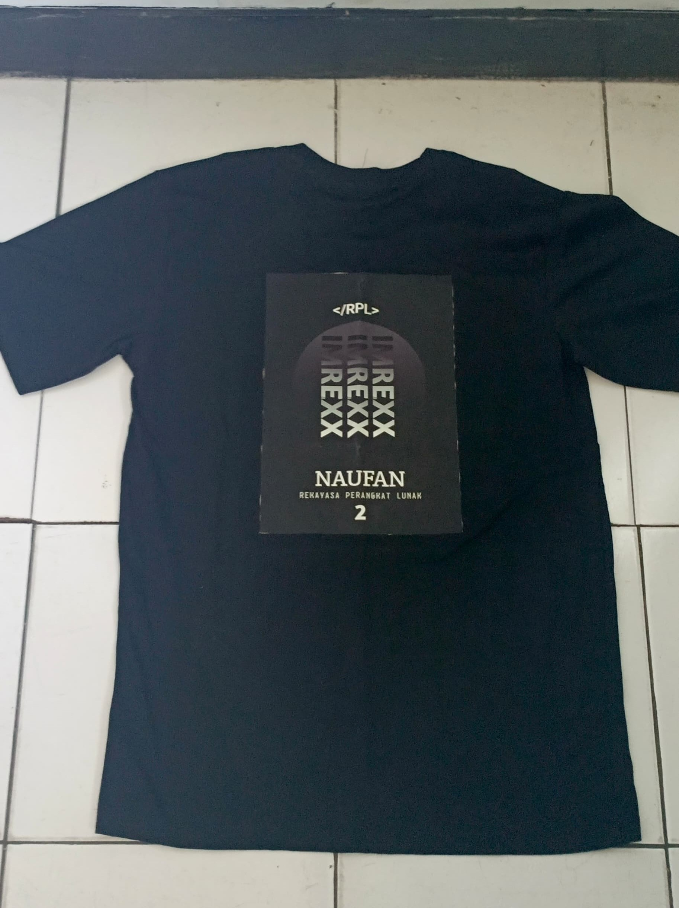

Hasil karya seni sablon THE DCLUB


Alat dan Bahan:
kaos warna gelap
setrika
transfer paper
kertas roti
gunting/cutter
laptop/hp(device untuk editing)
desain yang akan di sablon ke baju
printer
Cara Pembuatan:
-
Siapkan bahan dan peralatan: transfer paper, printer inkjet, kain, setrika.
-
Persiapkan dan cetak desain pada transfer paper.
-
Potong transfer paper sesuai dengan desain.
-
Persiapkan kain dan letakkan transfer paper di atasnya dengan sisi cetak menghadap ke bawah.
-
Setrika transfer paper pada kain dengan hati-hati dan merata.
-
Dinginkan dan lepaskan transfer paper dari kain.
-
Biarkan kain kering sebelum digunakan atau dicuci.